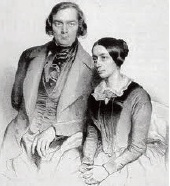

Robert Schumann’ın hayatı (1810-1856), yaratıcı dehâsı ve aynı zamanda ona eşlik eden aklî dengesizliğinden muzdaripliği ile simgeleşmişti. Kendisi de meşhur bir piyanist olan Clara Wieck Schumann (1819-1896) ile evlendi; hastalık, delilik krizleri ile akıl hastanelerinde hapsolma arasında dışavurumcu şarkılar ve oda müzikleri besteledi.

Robert ve Clara, Clara dokuz yaşındayken tanıştılar ve Robert, Leipzig’te Clara’nın babası Friedrich Wieck ile piyano çalışıyordu. Robert, hukuk kariyerini müzik yapmak için terk etti ve o zamanlar “müzikal zevksizliklere” saldıran Müziğin Yeni Gazetesi adında bir Alman dergide yazarlık yapıyordu. Bu dergi Hector Berlioz, Frederic Chopin ve sonraları Johannes Brahms’ı destekledi.
1840’ta Robert ve Clara, Clara’nın babası karşı çıkmasına rağmen evlendiler. Wieck, Robert’ın dengesizliğinden şüphelendi, çünkü genç adam muhtemelen frenginin bir sonucu olarak sıklıkla sinir bozukluğundan muzdaripti ve 1833’te intihara teşebbüs etti. Evliliklerinin ilk yılında Robert, aşklarının hatırına 140 türkü ve romantik şarkı besteledi. Clara, kendini yetiştirmiş usta bir konser piyanistiydi ve çağın en iyi solocularından bazılarını eğitti. Aynı zamanda kendi başına çeşitli parçalar da yazdı.
Ama evlilikleri kısa zamanda gergin ve zorlayıcı hale geldi. Clara’nın teşvikiyle Robert, 1841’de ilki oldukça övülen fakat diğeri o kadar beğenilmeyen iki senfoni yazdı. Clara, aynı zamanda Robert’i bir şef olması için de cesaretlendirdi, ama çok az yeteneği vardı ve orkestranın önünde dikilirken sıklıkla notların içinde kayboluyordu. Her şeyi berbat eden sinir krizleri daha sık olmaya başladı. Arkadaşı Felix Mendelssohn tarafından yeni oluşturulan Leipzig Konservatuarı’nda eğitim vermek üzere davet edildiğinde, ders verme girişimleri başarısızlıkla sonuçlandı. Dersleri açıklıktan uzak ve anlaşılmazdı, sonunda bırakmak zorunda kaldı.
1844’te Clara, Robert’e uzun bir Avrupa turnesinde eşlik etti. Turne sırasında Robert felce neden olan bir kriz geçirdi ve bu durum onları beş yıllığına Düsseldorf’a taşınmaya ikna etti. 1853 ile 1855 yılları arasında Robert, kafasının içinde sesler duyarak ve geceleri kafeteryalarda yalnız oturarak, köşelerde kendi kendine fısıldayarak sessiz bir şekilde aklını yitirmeye başladı. 1854’de Ren Nehri’nden atlayarak kendisini öldürmeye çalıştı ve iki yıl sonra öleceği bir akıl hastanesine yatırıldı.
EK BİLGİLER:
1. Bir efsaneye göre Robert Schumann, gençliğinde bir parmak güçlendirici alet kullanırken parmaklarından birini sakatlamasından dolayı piyano çalmayı bırakmak zorunda kalmıştır. Sakatlanmanın frengiyi tedavi etmek için kullanılan cıvadan kaynaklanmış olma ihtimali yüksektir.
2. Robert Schumann, doğasının iki tarafını ifade etmek için iki karakter yarattı: Derin düşünceli, hayalperest Eusebius ve aceleci, hayat dolu Florestan.